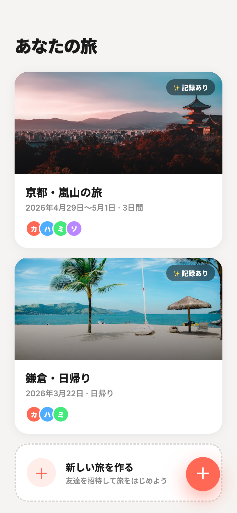
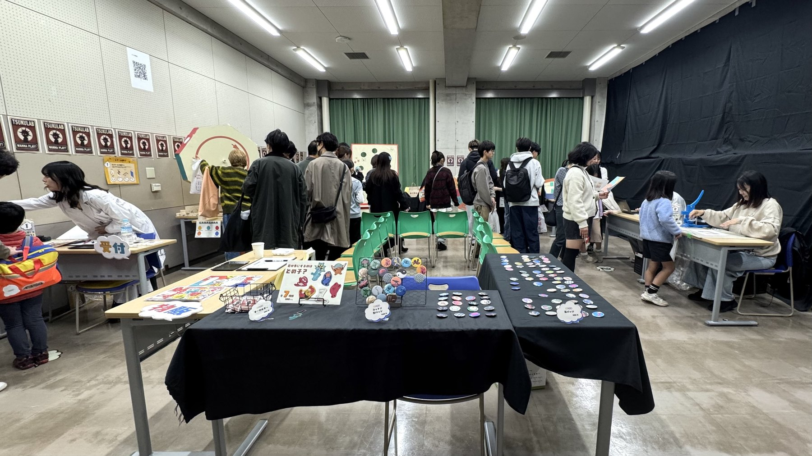
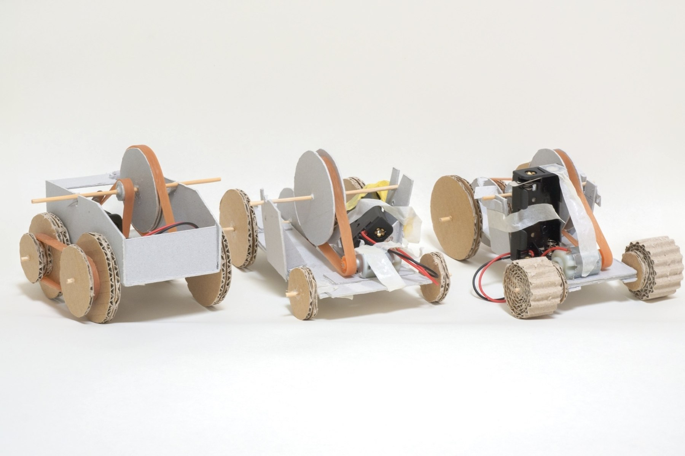
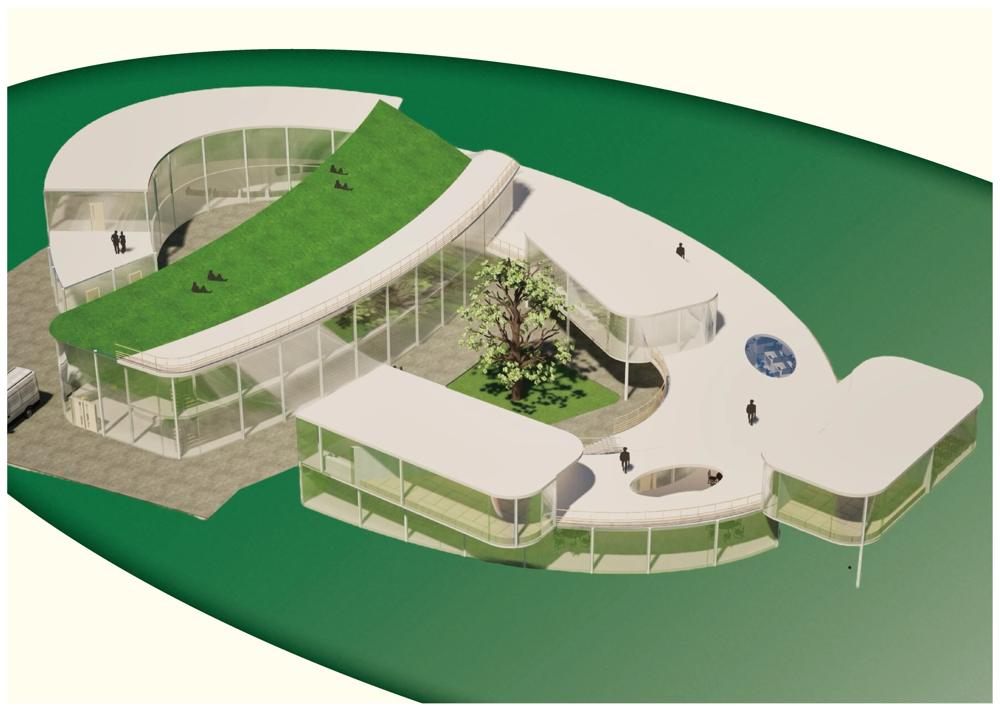
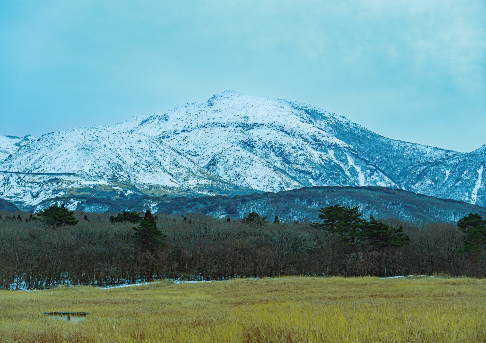

Kazuma Matsumura
Portfolio
scroll
About my design
前提を疑い、形を問い直す。
身の回りのモノや空間には、誰も疑わない「当たり前」が潜んでいる。私はその前提に立ち止まり、「なぜそうなっているのか」を問い直すことから制作を始める。問いが深まるほど、見えてくる形がある。
About me
面白がって、やってみる。
 この人を、もっと知る →
この人を、もっと知る →
関心
いま惹かれているのは、人そのものを扱う学問——言語学・文化人類学・認知科学。人がどう世界を捉え、なぜそう振る舞うのかを知るほど、「当たり前」の奥に隠れた"本当の問題"が見えてくる。だから、問題を見つけて、解いていく。それが誰かのためになると信じているから、手が動く。
観察
その目は、写真で養われた。レンズ越しに世界を見ていると、ふだん素通りするものの形や理由に気づく。
道具
新しいものは、まず使い倒す。AIも道具として手に馴染ませ、足りなければ自分で組む。技術が変わることは、こわがるより面白がりたい。
これから
AIが普及していくなかでも、確かな軸を持っていたい。デザインの力を信じて、挑戦を続けられる作り手であり続ける。
Selected Work
プロジェクト

Arco
UI/UXデザイン

津田沼祭ブース
UXデザイン

PUIPUIモータース
プロダクト設計

Segtape
プロダクト

Gokan
空間デザイン

Photo
写真